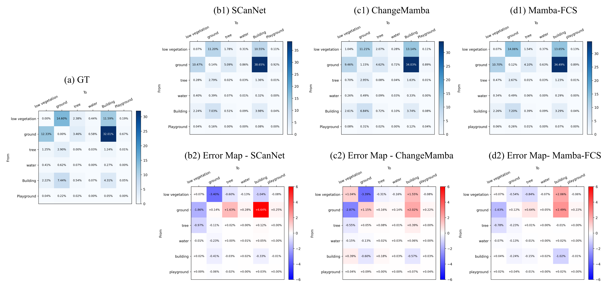
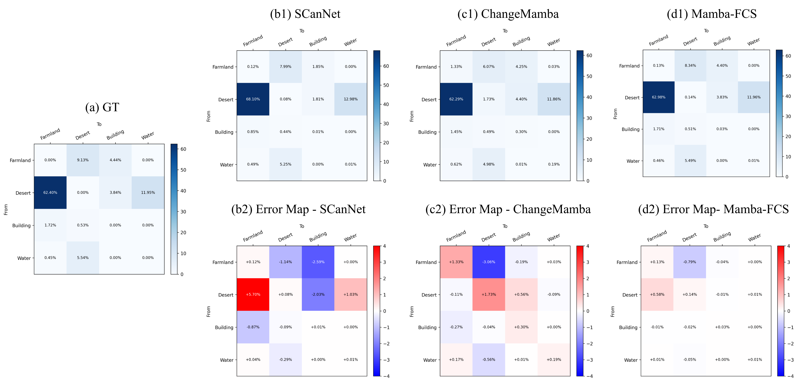

Spatial-frequency fusion
FFT log-amplitude cues complement spatial features, sharpening boundaries and reducing appearance-related noise from illumination and seasonal variation.
IEEE JSTARS 2026
Mamba-FCS combines VMamba-based long-range context modeling, joint spatial-frequency fusion, change-guided semantic refinement, and a SeK-inspired imbalance-aware objective to improve remote-sensing change analysis under illumination shifts, seasonal variation, and long-tail land-cover transitions.
Department of Electrical and Electronic Engineering, University of Peradeniya, Sri Lanka
*Corresponding author
Semantic Change Detection (SCD) in remote sensing imagery requires models that integrate extensive spatial context for broad geographic patterns, computational efficiency for large-scale datasets, and sensitivity to class-imbalanced land-cover transitions to detect rare or asymmetric changes. Early SCD approaches relied on Convolutional Neural Networks, which excel in local feature extraction but falter in modeling global spatial context due to limited receptive fields. Transformers mitigate this by capturing long-range dependencies via self-attention, yet their quadratic complexity impairs efficiency on vast remote sensing data. Emerging Mamba architectures, based on state-space models, strike a balance with linear complexity and robust long-range modeling, delivering efficient global context capture and improved performance. In this study, we introduce Mamba-FCS, an SCD framework leveraging a Visual State Space Model backbone, with three key contributions: A Joint Spatio-Frequency Fusion block that integrates log-amplitude frequency-domain features to sharpen edges and mitigate illumination artifacts, a Change-Guided Attention (CGA) module that explicitly bridges the intertwined Binary Change Detection and SCD tasks, and a novel loss function inspired by the Separated Kappa (SeK) metric to optimize for class imbalance. Experiments on the benchmark datasets show that Mamba-FCS consistently outperforms recent state-of-the-art algorithms. Ablation studies indicate that spatio–frequency fusion and CGA mainly sharpen boundaries and suppress hallucinated changes, while the SeK-inspired loss improves minority-class semantics. These results highlight the potential of Mamba-FCS as a scalable and accurate approach for remote sensing change detection.
Why this paper matters
Mamba-FCS improves semantic change detection by connecting efficient global context, spatial-frequency evidence, and imbalance-aware optimization in one pipeline.
FFT log-amplitude cues complement spatial features, sharpening boundaries and reducing appearance-related noise from illumination and seasonal variation.
Intermediate binary change cues guide both semantic decoders, tightening consistency between where change happens and which classes change.
The loss directly targets semantic consistency under long-tail transition imbalance instead of relying only on standard segmentation losses.
Architecture


Benchmarks
Use the selector to compare OA, FSCD, mIoU, or SeK across every model reported in the Mamba-FCS paper.
Mamba-FCS outperforms ChangeMamba across all listed metrics, including SeK 25.50 vs 24.11 and mIoU 74.07 vs 73.68.
The largest visible gap is on SeK: 60.26 for Mamba-FCS compared with 53.66 for ChangeMamba and 52.63 for SCanNet.
Qualitative and transition-level evidence
On SECOND, Mamba-FCS produces more compact building and playground regions, suppresses false change blobs around buildings and vegetation, and better preserves unchanged structures than HRSCD-S4, Bi-SRNet, SCanNet, and ChangeMamba.
On Landsat-SCD, the method captures water regions more accurately, produces cleaner desert extents, and forms more coherent farmland/water transition fronts with fewer false alarms.


Reproducibility
The paper reports standard splits on SECOND and Landsat-SCD, PyTorch training, and ablations averaged over five runs.
| Optimizer | AdamW | Batch size | 4 |
|---|---|---|---|
| SECOND schedule | 30,000 iterations | Landsat-SCD schedule | 50,000 iterations |
| Hardware | NVIDIA RTX A6000, 48 GB VRAM | Workstation | 32-core CPU, 126 GB RAM |
| Training time | 24 h SECOND, 36 h Landsat-SCD | Inference | 284.69 ms per bi-temporal RGB pair |
| Peak GPU memory | 1152.65 MB | Model size | 189.54M parameters |
| Compute | 263.15 GFLOPs | Deployment message | Higher-capacity model without a proportional inference-time penalty |
Limitations and future work
The SeK-inspired loss is developed in a fully supervised pixel-wise setting, and its behavior under label noise, weak supervision, semi-supervised learning, or domain-adaptive semantic change detection remains open. Future work includes lighter or distilled variants, multi-modal fusion, and SeK-guided learning beyond fully supervised settings.
Citation
Wijenayake, B., Ratnayake, A., Sumanasekara, P., Godaliyadda, R., Ekanayake, P., Herath, V., and Wasalathilaka, N., "Mamba-FCS: Joint Spatio-Frequency Feature Fusion, Change-Guided Attention, and SeK Inspired Loss for Enhanced Semantic Change Detection in Remote Sensing," IEEE Journal of Selected Topics in Applied Earth Observations and Remote Sensing, vol. 19, pp. 7680-7698, 2026. DOI: 10.1109/JSTARS.2026.3663066.
@ARTICLE{mambafcs2026,
author={Wijenayake, Buddhi and Ratnayake, Athulya and Sumanasekara, Praveen and Godaliyadda, Roshan and Ekanayake, Parakrama and Herath, Vijitha and Wasalathilaka, Nichula},
title={Mamba-FCS: Joint Spatio-Frequency Feature Fusion, Change-Guided Attention, and SeK Inspired Loss for Enhanced Semantic Change Detection in Remote Sensing},
journal={IEEE Journal of Selected Topics in Applied Earth Observations and Remote Sensing},
year={2026},
volume={19},
pages={7680--7698},
doi={10.1109/JSTARS.2026.3663066}
}